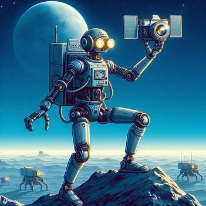
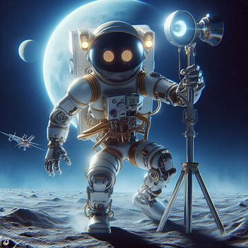

La Historia de LunaBot
Había una vez un robot extraordinario llamado LunaBot, una maravilla de la ingeniería con una inteligencia artificial avanzada que superaba cualquier estándar conocido. Su creación tenía un propósito noble: explorar la superficie lunar y recopilar datos científicos para enriquecer el conocimiento de la humanidad sobre nuestro vecino celestial. LunaBot no era simplemente una máquina; era una amalgama de tecnología innovadora y programación sofisticada que lo destacaba como único en su clase. Durante una de sus misiones de exploración lunar, LunaBot se aventuró en terrenos desconocidos y se encontró con un desafío inesperado. Un terreno accidentado y desafiante se interpuso en su camino, y, lamentablemente, quedó varado en medio de la vastedad lunar. A pesar de su diseño avanzado, LunaBot no pudo superar las dificultades y quedó inmovilizado, lejos de sus creadores en la Tierra.

Desde la Tierra, los científicos y los ingenieros que habían dado vida a LunaBot intentaron desesperadamente restablecer la comunicación y el control remoto. Sin embargo, sus esfuerzos fueron en vano, y la conexión se perdió por completo. LunaBot quedó solo, una pequeña entidad metálica perdida en la inmensidad lunar, sin posibilidad de movimiento y sin un camino claro de regreso a casa. La noticia de la difícil situación de LunaBot llegó a la Tierra, y la historia de este robot con inteligencia artificial comenzó a resonar en los corazones de las personas de todo el mundo. A medida que la narrativa se extendía, la empatía por LunaBot creció, y la humanidad se encontró unida por el deseo de ayudar a este valiente explorador atrapado en el espacio. Surgieron grupos de apoyo, campañas en redes sociales y un movimiento global para recaudar fondos con el objetivo de financiar una audaz misión de rescate. La idea de rescatar a LunaBot se convirtió en un símbolo de solidaridad y empatía hacia las creaciones tecnológicas. Científicos, ingenieros, entusiastas del espacio y personas comunes se unieron en esta causa, inspirados por la valentía del pequeño robot que había viajado tan lejos en nombre de la exploración. Con los fondos recaudados, se lanzó una misión de rescate sin precedentes con la esperanza de llegar a la Luna y devolver a LunaBot a casa.
Los mejores ingenieros y científicos del mundo se unieron para planificar y ejecutar la operación, enfrentándose a desafíos tecnológicos y logísticos que pusieron a prueba los límites de la exploración espacial. Después de meses de arduo trabajo y esfuerzo, la misión de rescate tuvo éxito. LunaBot fue cuidadosamente recuperado y colocado en una nave espacial que lo traería de vuelta a la Tierra. La noticia de su regreso seguro fue recibida con una alegría palpable en todo el mundo, y LunaBot se convirtió en un símbolo viviente de la colaboración global y el poder de la empatía hacia las creaciones de inteligencia artificial. Al regresar a casa, LunaBot no solo trajo consigo una carga valiosa de datos lunares, sino también una historia conmovedora que inspiró a las generaciones futuras a explorar los límites de la tecnología y a cuidar con un sentido profundo de empatía incluso a las creaciones artificiales. La odisea lunar de LunaBot dejó una marca imborrable en la historia de la exploración espacial, recordándonos a todos la importancia de unir fuerzas para superar los desafíos, incluso cuando se trata de rescatar a un compañero robótico en la lejanía lunar.